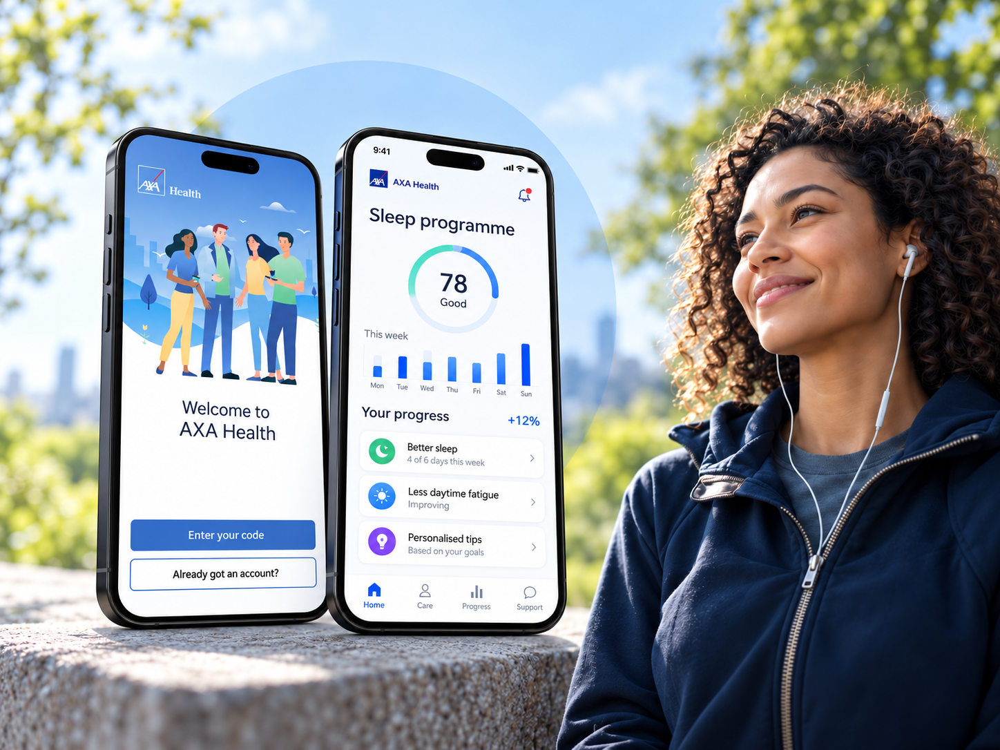
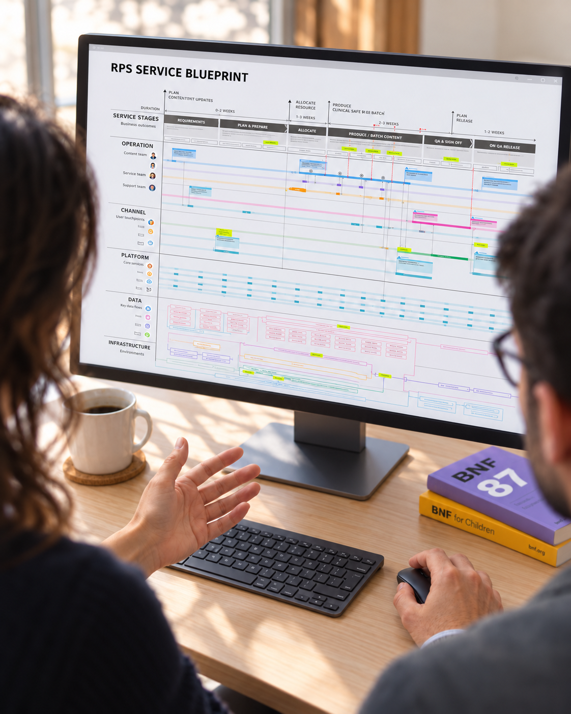

01 / AI innovation & opportunity framing
Agentic AI pilot for UK police
From a GenAI demonstration to a fundable, evidence-led pilot.
Connecting executive ambition, operational reality and AI feasibility into a costed proposition for crime prevention.
2 weeksTo a defined MVP proposal
AcceptedLed to follow-on work
Opportunity framing · Human–AI service design · Evaluation · Investment case
Read the case study02 / Agentic AI & service design
Applying AI-first service design to complex public sector work
A multi-agent workflow for evidence-based service design.
Specialised Microsoft Copilot agents for cross-government discovery, with human judgement at every decision point.
>50%Less research time (user-reported)
4Government departments reached
Agentic workflow design · Stakeholder engagement · User research · Human-in-the-loop
Read the case study
03 / Product transformation & delivery
Royal Mail product & service design
Refocusing a national product on the journeys that matter.
The brief was a UI refresh. The opportunity was to build trust, improve retention and help customers serve themselves.
1.7 → 4.6App Store rating
90%Positive customer sentiment
Experience strategy · Research · Product design
Read the case study
04 / Digital health & service design
AXA Health product & service design
Turning healthcare expertise into scalable digital health services.
Clinically approved mobile health services, designed across members, clinicians, partners and technology.
~2MPotential members
5Digital health programmes
Experience strategy · Service design · Product design · Design system
Read the case study
05 / Financial services & service transformation
Supply-chain finance service design
Redesigning a digital service for supply-chain finance operations.
After a merger, I modelled the operation, found the bottlenecks and led the work to a development-ready MVP.
2 → 1Merged companies into one digital service
60Global operations staff surveyed
Process modelling · Service design · North Star concept · MVP definition
Read the case study
06 / Enterprise transformation & publishing
Service & transformation design for Royal Pharmaceutical Society
From 10+ legacy systems to one modern publishing service.
I reframed a stalled systems replacement around the end-to-end publishing service, and carried it into implementation.
90%+User adoption in the first rollout
60%+Less operational complexity and manual effort
Service design · Experience architecture · UX roadmap · Adoption
Read the case study